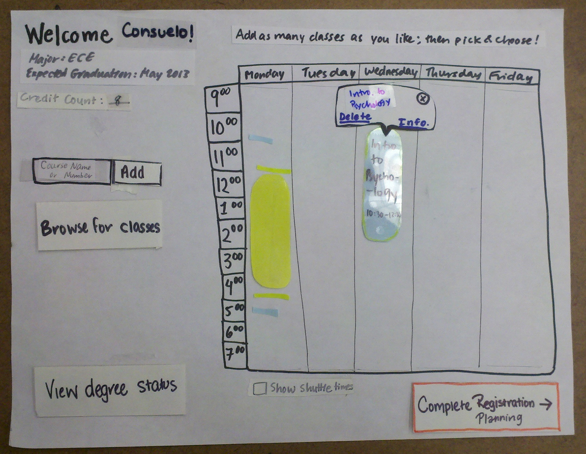
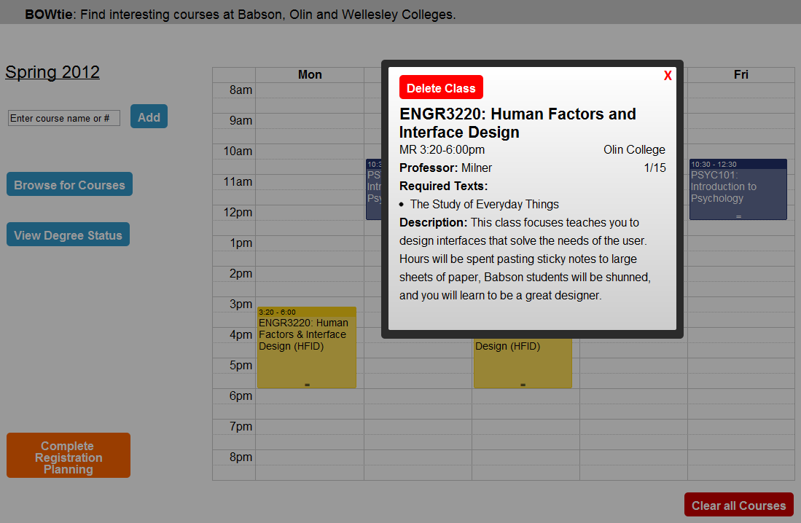

Bowtie : A course-planning tool
A product stemming from a class in human factors interface design

The Context
Human Factors Interface Design (HFID) is a class at Olin where we explore the design and development of user interfaces. We take into account the realities of human perception and behavior, the feasibility of computer interaction, and aim to build a usable interface for a product.
The Project
My team, Ajax, worked on improving the tri-college course cross-registration experience between the college Babson, Olin, and Wellesley. The three institutes are trying to get students to register for courses at the each other's schools to improve cross-campus interaction. We wanted to help their initiative.
Result: Our team designed a web application named BOWtie , aimed to help students plan their course schedule for the upcoming semester with class descriptions from all 3 schools. See full documentation and process here.
Process
After initial weeks of user interviews, we learned that the small details of planning and logistics to take a course at another school, quickly lead to high activation energy. Suddenly there is so much course-planning to do that students end up ditching the idea. We created BOWtie as a catalyst to reduce this activation energy; we take care of the small details and help students focus on the important content - the classes that are offered.
Our interviews led us to create 3 major personas that would be involved in using this web application. Based on the needs and wants of the personas, we created paper prototypes of our interfaces and got user feedback on them. Paper prototypes are useful because they let designers make quick changes, allow users to focus on critiquing content, and most important, keep everyone candid and relaxed because we are working on paper and not a laptop screen.

With this feedback, we created a high-fidelity prototype of allowing students to pick-and-choose classes on a Google-calendar type screen where the logistics of choosing classes are automated. The students think about what classes are interesting to them.
The hi-fi protoype underwent usability testing and heuristic evaluation. This allowed us to refine the prototype over time. The prototype was built with HTML5, CSS, Javascript, jQuery.

See the final prototype of BOWtie here .
The Reflection
I was the user interaction and interface design lead for the team. This project taught me some of the most important design lessons I need.
Foremost, I finally experience the full cycle of design and development: problem definition ==> user research ==> ideation ==> paper prototype ==> testing ==> web prototype ==> refinement.
Second, I worked with a team that had a lot of fun and attributed importance to the issue of cross-registration. We all cross-registered for classes and we knew the process was broken and needed fixing. The team also worked to help each other improve technically. With this project, I got my first exposure to Javascript and jQuery.
Third, this class showed me that interaction design, user-facing research and engineering, is what I want to do in the future. I loved my assignments, proud of my contribution, invested in the lessons we learned and the process we took. This class was a turning point that allowed me to reshape the rest of my college career.